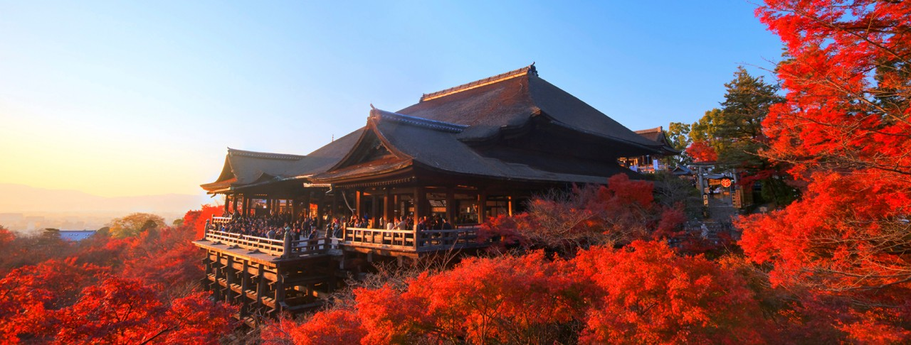

Japan Trip
PACS Moon
May 31, 2017
18:04

Notre voyage commence en 2016 entre Brest et Paris, lorsque nous décidons de profiter de l'été suivant pour visiter le Japon.
Tous deux amateurs de la culture, la cuisine, les paysages, les rencontres et l'aventure, nous voulons nous imprégnez vraiment du pays.
C'est la raison pour laquelle nous allons rester plus d'un mois sur place.